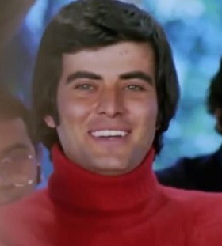

"DAMAT FERİT"
Asıl adı Tahsin Tarık Üregil olan Tarık Akan, 13 Aralık 1949 yılında İstanbul'da dünyaya geldi.
Toplam 111 sinema filmi ve 4 dizi'de rol almıştır.1982 yılında Şerif Gören ve Yılmaz Güney'in yönettiği efsane olan Yol filmi ile çok büyük başarı elde etmiş ve dünyaya adını duyurmuştur. Film 1982 yılında Cannes Film Festivali'nde Altın Palmiye ödülünü alan tek film olmuştur.